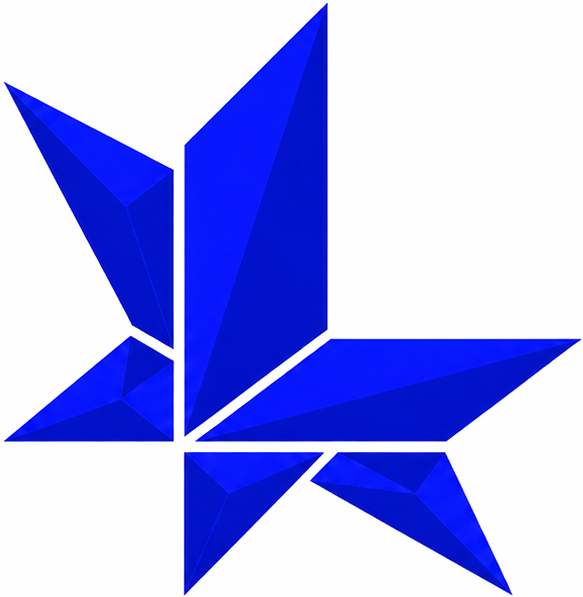

/parse
universal parsing
Tree-sitter grammars extract precise syntax trees across dozens of languages and frameworks.

latticeLattice parses, resolves, and models your entire codebase as a living knowledge graph — built for engineers and the agents that work beside them.
Every function, module and dependency in your repository becomes a node. Every call, import, and reference becomes an edge. Lattice keeps this substrate live as your codebase changes — so nothing you build on it ever goes stale.
Tree-sitter grammars extract precise syntax trees across dozens of languages and frameworks.
Cross-file references connect definitions to usages, forming a coherent map of your system.
Resolved symbols become a directed graph of types, functions and modules — your architecture, made explicit.
Vector embeddings and exact graph traversal work together to surface the most relevant context.
LLM agents traverse the graph to answer questions, trace impact, and explain complex flows.
Everything indexes on your machine. Your source code never leaves your environment.
A CLI that speaks your language. Trace dependencies, surface dead code, and ask questions about your architecture — without leaving your workflow.
read the docs →$ lattice trace UserService --depth 2 UserService ├── AuthMiddleware ├── UserRepository │ └── Postgres :Client └── Logger
“Your codebase already contains the answers.
Lattice makes the relationships visible.”